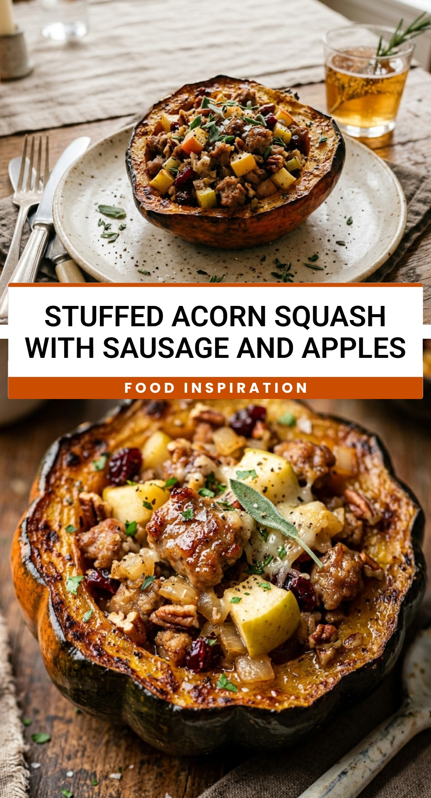

Stuffed Acorn Squash With Sausage And Apples
October 1, 2026

As the leaves begin to turn and the air grows crisp, there is nothing more comforting than a meal that captures the essence of autumn. Stuffed acorn squash with sausage and apples is the quintessential fall dish, blending savory, sweet, and earthy flavors into one beautiful edible bowl. It is a hearty meal that looks impressive on the dinner table but is surprisingly simple to put together for a weeknight treat or a holiday side dish.
Recipe Information
Prep Time: 15 minutes
Cook Time: 50 minutes
Total Time: 65 minutes
Servings: 4
Difficulty Level: Easy
Nutrition Information
Calories per serving: 385
Protein: 16g
Carbohydrates: 32g
Fat: 24g
Fiber: 7g
Sugar: 11g
Sodium: 680mg